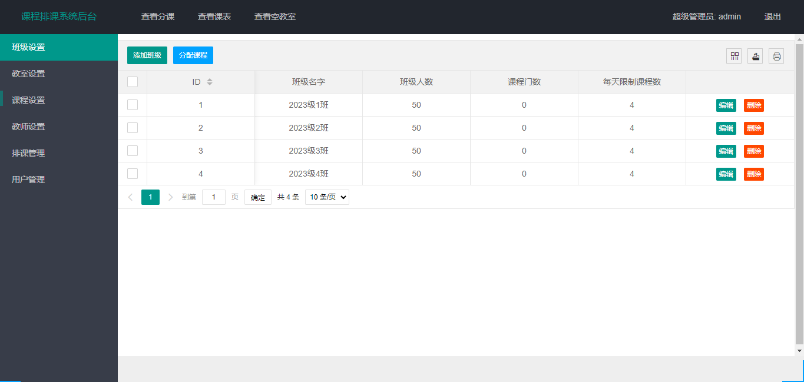
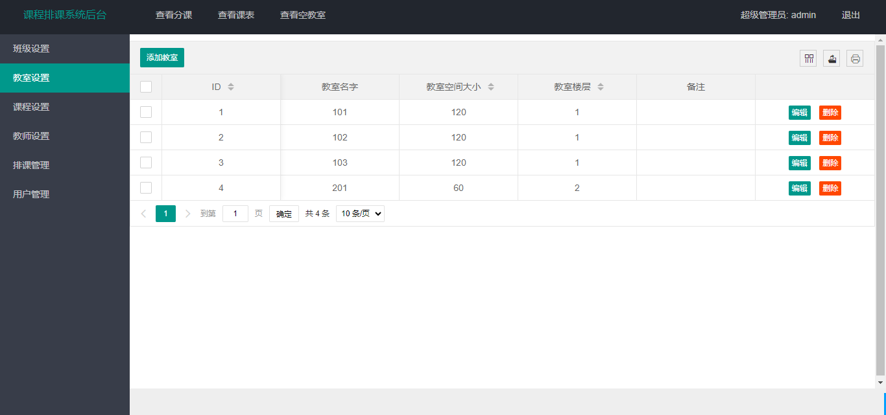
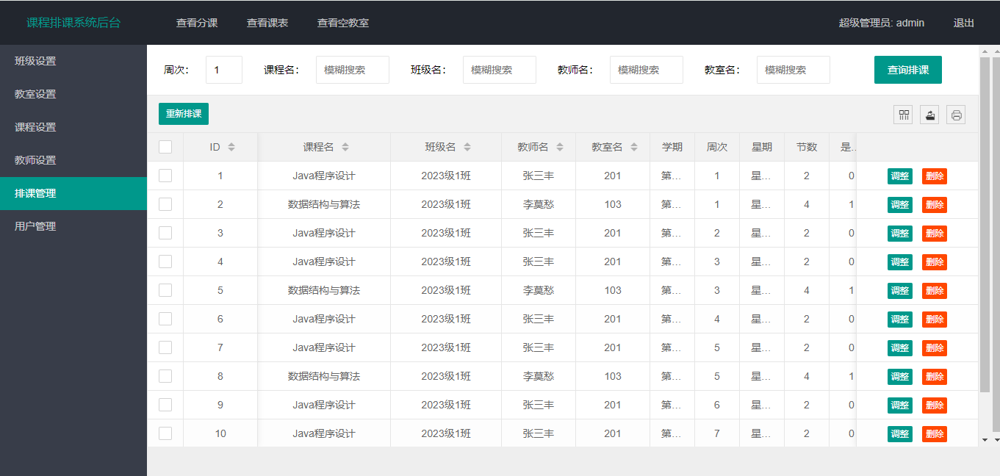
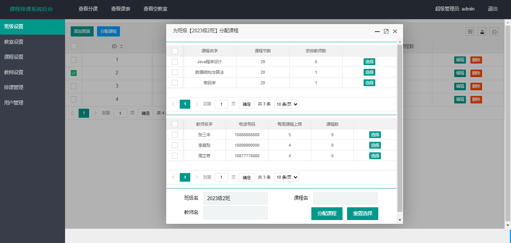
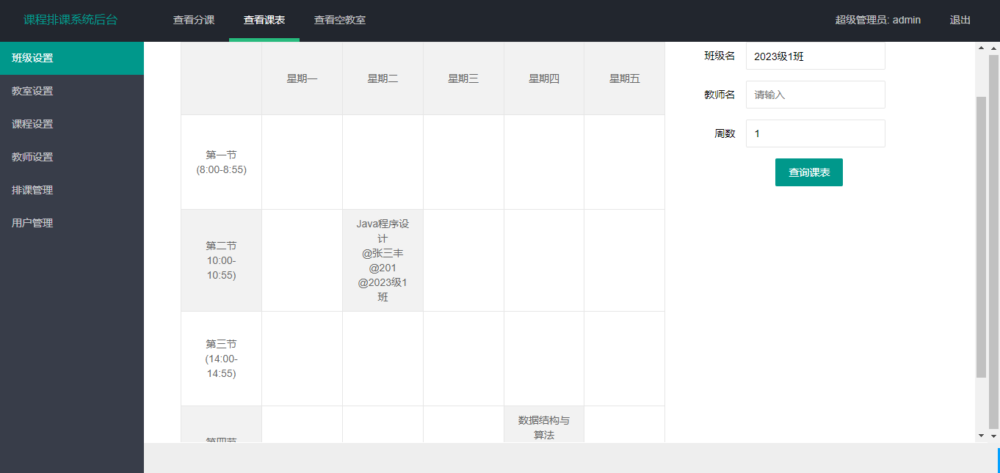

SpringBoot 自动排课系统
一、项目介绍
自动排课系统使用 SpringBoot+Mybatis 进行开发，系统主要定位于管理员进行数据管理，自动排课。
主要功能如下：
- 班级管理
- 教师管理
- 课程管理
- 教室管理
- 排课管理
- 查看课表
- 查看空教室
- 查看排课
二、技术框架
- 后端：SpringBoot，Mybatis
- 前端：jquery，layui
三、安装教程
- 用 idea 打开项目
- 在 idea 中配置 jdk 环境
- 配置 maven 环境并下载依赖
- 新建数据库，导入数据库文件
- 在 application.properties 文件中将数据库账号密码改成自己本地的
- 启动 redis 服务，在 application.properties 文件中将 redis 相关信息改成本地的
- 启动运行，浏览器输入 http://localhost:8080/login 进行访问，管理员账号密码：admin/123456
四、项目截图





